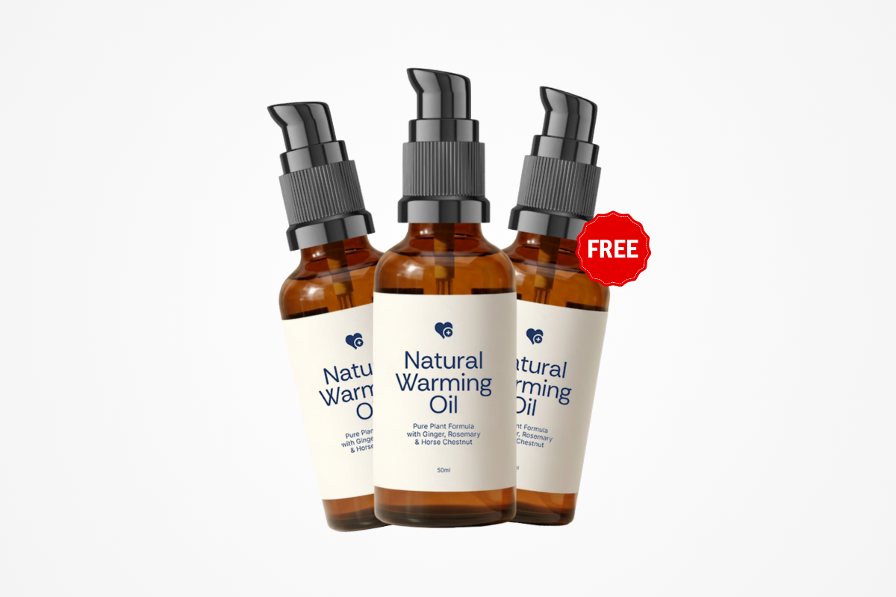
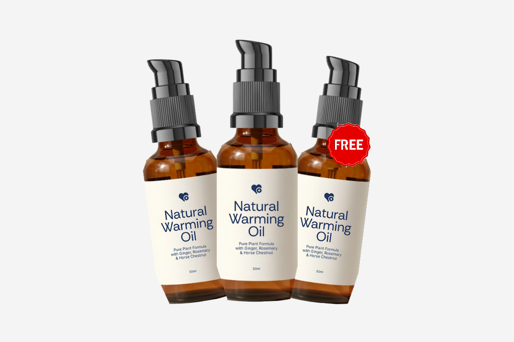
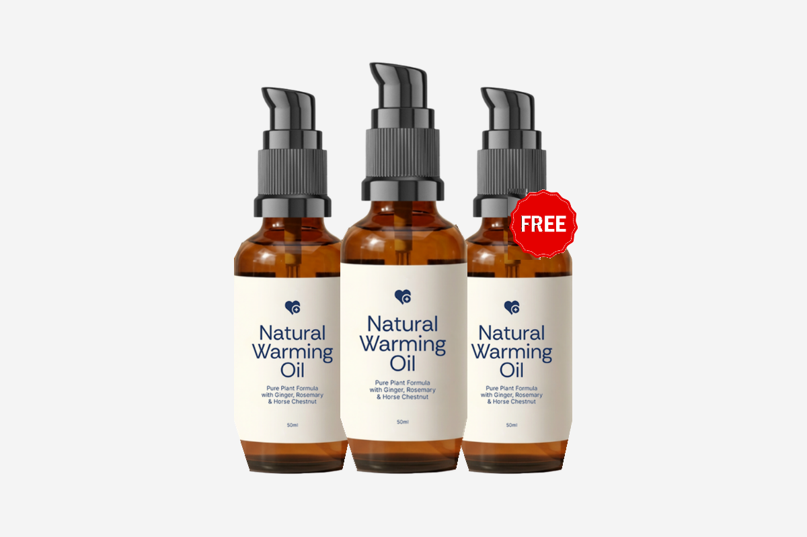

The tilt itself is right and stays. The problem is that only the left bottle is rotated — the right one is almost upright. So the outline is lopsided in opposite directions depending on where you look, and the eye reads it as “off” without being able to name it.


Hover to flip — or tap on mobile. Watch the two outer caps.
| Left bottle | Right bottle | ||
|---|---|---|---|
| Cap top | y135 | y123 | right sits 12px higher |
| Base | y712 | y702 | left sits 10px lower |
| Cap silhouette | 128px wide | 114px wide | left tilted harder |
| Outline delta | −173px to +56px across the height | crosses over halfway down | |
At cap height the left pushes out ~25–55px further. At body height the right pushes out ~50–85px further. The group is centred fine (5px) — it is purely the flanker geometry.

Perfectly symmetric but flat, and the depth is gone. Not the direction — shown only so the mirrored-tilt choice above is clear. The fan is what we want.